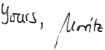

Dear Visitor!
My name is Moritz Beller. I am doing Software Engineering research at Meta. My interest lies in creating and empirically evaluating tools that help developers be more productive. The focus of my research has been largely in the domains of Testing and Continuous Integration.
Feel free to contact me or follow my updates on Twitter as @Inventitech.

| 2021-10 | Gave an industry talk at the Performance Summit about our most recent work predicting performance regressions at Facebook. Check out the recording. |
| 2021-06 | My first paper from working at Facebook got published! Check out Mutation Monkey at Facebook. |
| 2020-04 | I won the 1st prize of the VERSEN PhD Award! Watch the digital ceremony. |
| 2019-10 | I won the IPA Dissertation Award! Super humbled and honored! |